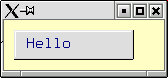
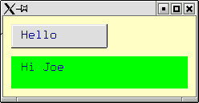
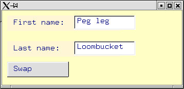
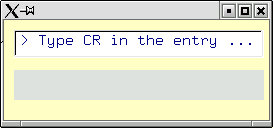
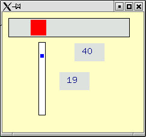
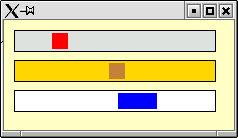
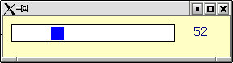
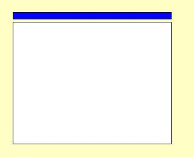
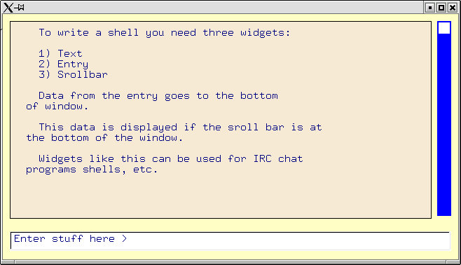

{kind=link}
{kind=link}
{kind=link}
{kind=link}
{kind=link}
{kind=link}
{kind=link}
{kind=link}
{kind=link}
{kind=link}
{kind=link}

EX11 is an X windows graphics system for Erlang. With EX11 you can easily program complex GUIs. EX11 models all widgets as concurrent processes - this results in extrememly compact GUI programs which are very simple to program and understand.
EX11 is written in 100% Erlang and talks directly to the X server.
EX11 has a two parts - a low-level library which is used to communicate with the X-server and a high level widget set intended for GUI programming.
Using the widget set (sw = "simple widgets") is very easy. Writing your own widgets is easy - modifying the X-divers is less easy.
Label ! {set, "text"}
Val = rpc(Entry, read)
This directory contains the latest stable release and
daily (unstable) updates.
Screenshots
Screenshots
example0.erl is the main program which launches all the other examples.

example1.erl shows how to make a simple button.
Master menu:
A simple button.
A label which changes when you hit the button.

example2.erl has a simple button and a label. When you click on the button the position of the mouse pointer is written into the label.
Entries. The text is swapped when you hit the button.

example3.erl Is made from two editable entries and two labels and a swap button. When the swap putton is pressed the contents of the two entries is interchanged.
Entry. When you hit CR the label is changed.

example4.erl shows how to enable the carriage return event in an entry. When carrage return is pressed in the entry the entry is read and the contents of the entry is written to the label.

example5.erl shows how to make a horizontal and a vertical scrollbar. When the object in the scrollbar is dragged a function is evaluated.
Scrollbars.

example6.erl illustrates the use of a progress bar. When the red blob is dragged the blue blob moves to the left or right. When the brown blob is movved the size of the blue blob is changed.

example7.erl is another example of the scrollbar.
Progress bar.
example8.erl shows how to use a a text display widget.
The text display widget displays a file staring at a given line in the file. The start line can be changed by dragging on a scrollbar or by pressing on one of the three buttons at the bootom of the frame.
Text display widget.
File display.
Interactive layout control.
Interactive layout control.
Draggable frames.
Draggable objects.
Pop up menus.
Animation.
Color picker.
Clock.
Clock.

Volunteers are needed to write:
To see how the widget library is called I'll start with a very simple example. I'm going to make what looks like a "window".

A window can be simply made by composing two primitive widgets, a DragBlob and a Rectangle. The code do do this is:
DragBar = swDragBox :make(Win, XX, YY, 260, 10, 1,?blue),
Rectangle = swRectangle:make(Win, XX, YY+16, 260, 200,1,?white),
DragBar ! {onMove, fun(X, Y) ->
Rectangle ! raise,
Rectangle ! {setXY, X, Y+16}
end}
This code make something that looks pretty much like a regular window, only I have separated the border from the frame so that you can clearly see that there are two separate widgets.
The line of code:
DragBar ! Msg
Sends an asynchronous message to the DragBar. The message is:
{onMove, Fun}
This means "when the Dragbar is moved to the position X,Y evaluate the function Fun(X, Y)".
Fun is the function:
fun(X, Y) ->
Rectangle ! raise,
Rectangle ! {setXY, X, Y+16}
end
This sends two messages to Rectangle. The message raise pops the window to the top of the display stack, in case it was obscured. The message {setXY, X, Y} moves the window to the position X, Y.
That's all that's needed - three lines of code. Now when you drab the blue bar the frame will obediently follow all motions of the border bar.
By reducing the gap between the border and the frame the compound object will look and behave like a regular window.
The drag frame example needs a little extra code to get it started. We need to connect to the X server and create a top-level window:
start() -> spawn(fun win/0).
win() ->
Display = xStart("3.2"), %% use version 3.2 of the libraries
Win = swTopLevel:make(Display, 400, 250, ?bg),
... code as before ...
loop().
loop() ->
receive
Any ->
io:format("received:~p~n",[Any]),
loop()
end.
All windows must be controlled by their own processes - thus we spawn off a process to control the window. The process goes into an infinite loop (don't worry about this for now) - If this process dies then any widgets, windows etc. created by the widget will be destroyed.
The complete code for this is in example19.erl

We can make a shell by combining three primitive widgets. swScrollbar, swText and swEntry.
The code to do make this looks like this:
Win = swTopLevel:make(Display, Width, Ht, ?bg),
Text = swText:make(Win, 10, 10, Width-50, Ht-70, ?AntiqueWhite,
{file, "shell.txt"}),
Scroll = swScrollbar:make(Win, Width-30, 10, 20, Max=Ht - 72,0,
?blue,?white),
Text ! {set,100000},
Entry = swEntry:make(Win, 10, Ht-40, Width-20, "Enter stuff here > "),
Entry ! {onReturn,
fun(Str) ->
Text ! {addStr,Str},
Entry ! {set, ">"}
end}
Firstly we create an entry a text display widget and a scrollbar.
Then we send a Text ! {set,100000} to the text widget. {set, N} means skip N lines at the start of the text that is being displayed and show my the rest of the file. Setting a large number (like 100000) means skip 100000 lines and then display the rest of the file - Executing this has the effect of always displaying the "end" of the file.
I have enabled the onReturn event in the entry. When a carriage return is pressed in the entry, the code:
fun(Str) ->
Text ! {addStr,Str},
Entry ! {set, ">"}
end.
Is evaluated, where Str is the content of the entry. An {addStr, Str} message to the Text widget appends Str to the end of the file. A Entry ! {set, ">"} message to the entry sets the text in the entry to >.
So far this code will track any data that is sent to the text widget. If the user adjusts the scrollbar to see "earlier" data in the file a {set, N} message is sent to the text widget.
If the latest additions to the text are "off screen" they will not be seen.
To achieved this effect we have to "join" the scrollbar and the text widget. This is done as follows:
join(Text, ScrollBar, Max) ->
{MaxHt, MaxLines} = rpc(Text, size),
A = (MaxLines - MaxHt)/Max,
ScrollBar ! {onMove,
fun(I) ->
if
I >= Max ->
Text ! {set, 1000000};
true ->
Text ! {set, trunc(A*I)}
end
end}.
When the scrollbar is moved to position I, then Fun(I) is evaluated. I is an integer in the range 1 to Max. Where Max is the longest dimension of the scrollbar. This integer from 1 to max is used to calculate the offset in the text window. When I is >= Max we want to set the offset in the text widget to a very large value. MaxHt is the number of screen lines of the text widget and MaxLines is the total number of lines in the text widget.
This code is actually buggy since as we add new code to the text widget we should increase MaxLines by one every time we add a new line..
The complete code for this is in example10.erl.
A 3-D button.
Creation: swButton:make(Parent, X, Y, Width, Ht, Color, Str)
Private protocol:
Implementation: swButton.erl
Am analogue clock.
Creation: swClock:make(Parent, X, Y, Width, Ht, Color)
Private protocol:
Creation: swDragBox:make(Parent, X, Y, Width, Height, Border, Color)
Private protocol:
Implementation: swDragBox.erl
Creation: swEntry:make(Parent, X, Y, Width, Str)
Private protocol:
Implementation: swEntry.erl
Creation: swFlashButton:make(Parent, X, Y, Width, Ht, Border, Color1, Color2, Str)
Private protocol:
Implementation: swFlashButton.erl
Creation: swLabel:make(Parent, X, Y, Width, Ht, Border, Color, Str)
Private protocol:
Implementation: swLabel.erl
Creation: swProgressBar:make(Parent, X, Y, Width, Ht, Border, Color1, Color2)
Private protocol:
Implementation: swProgressBar.erl
Creation: swRectangle:make(Parent, X, Y, Width, Ht, Border, Color)
Private protocol:
None - this is merely a container - it dows however, respond to the
generic prototcol
Implementation: swRectangle.erl
Creation: swScrollbar:make(Parent, X, Y, Width, Ht, Border, Color1, Color2)
Private protocol:
Implementation: swScrollbar.erl
Creation: swText:make(Parent, X, Y, Width, Ht, Color, Data) where Data is {file, F} or {str, S}.
Private protocol:
Setting N to a very large number, for example, {set, 1000000000} displays the end of the file. If additional data is added to the file, then the tail of the file will always be displayed.
Implementation: swText.erl
Creation: swTopLevel:make(Parent, Width, Ht, Color)
Private protocol:
Implementation: swTopLevel.erl
All widgets should implement the following generic protocol. [2]
Using the widget set (sw = "simple widgets") is very easy. Writing your own widgets is easy - modifying the X-divers is less easy.
Volunteers are needed to write:
Label ! {set, "text"}
Val = Entry !! read
!! is an infix RPC operator. In the code this is written sw:rpc(Process, X) hopefully this operator will find itself in standard Erlang before too long :-)
example14.erl
This directory contains the latest stable release and
daily (unstable) updates.
Color management on non 24 bit Truecolor monitors is known to be incorrect.
[1] The "mount point of a widget is a point to which sub-widgets may
be attached. Usually a widget has one top-level widget, in which case
this widget is the mount point. If the widget controls several
top-level windows then the widget controlling process will have to
choose which of these widget is an appropriate mount point.
[2] The generic protocol is implemented in sw:generic/3
Download
Known bugs
Notes